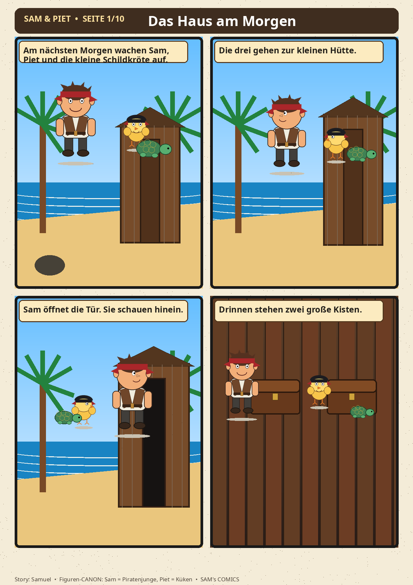
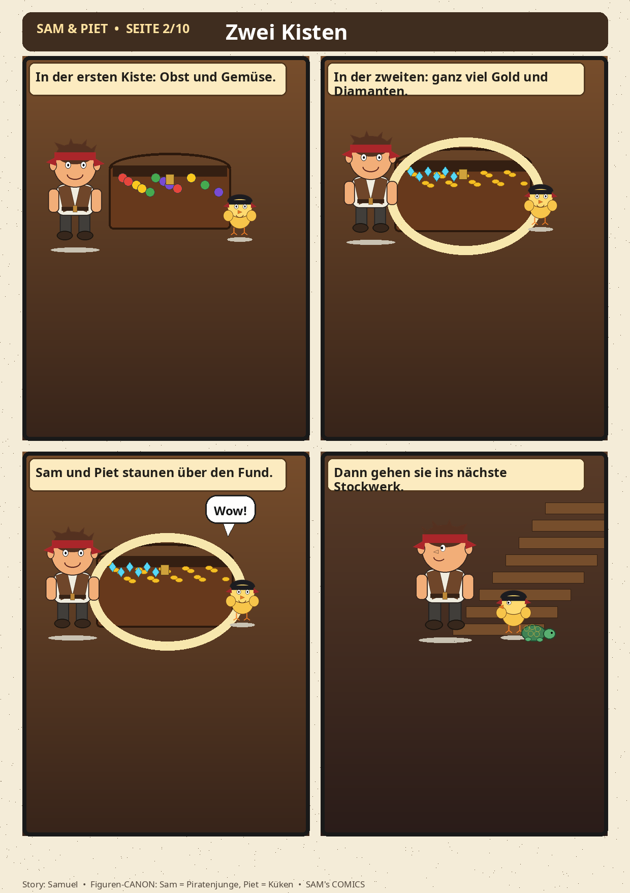
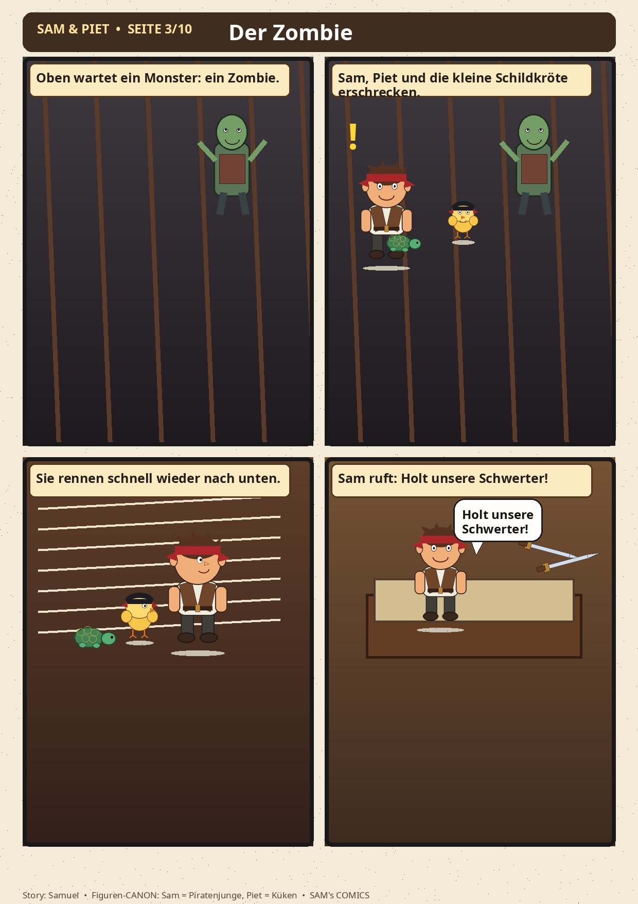
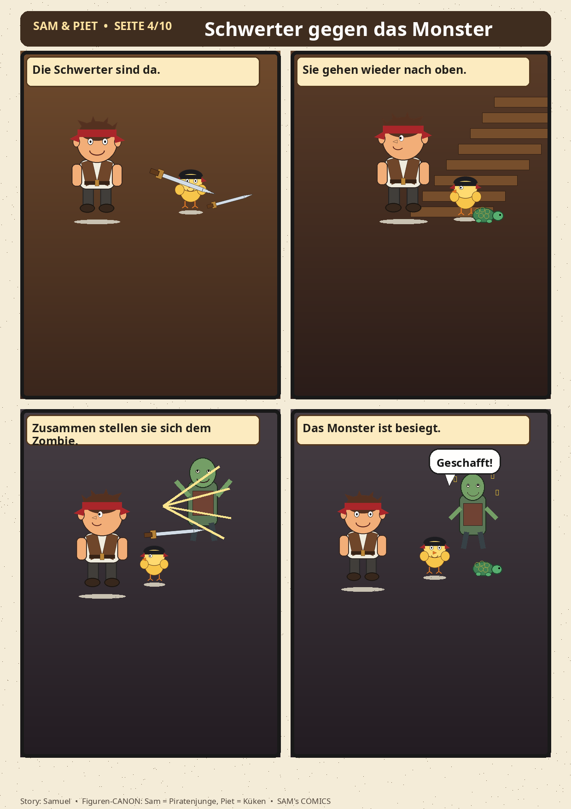
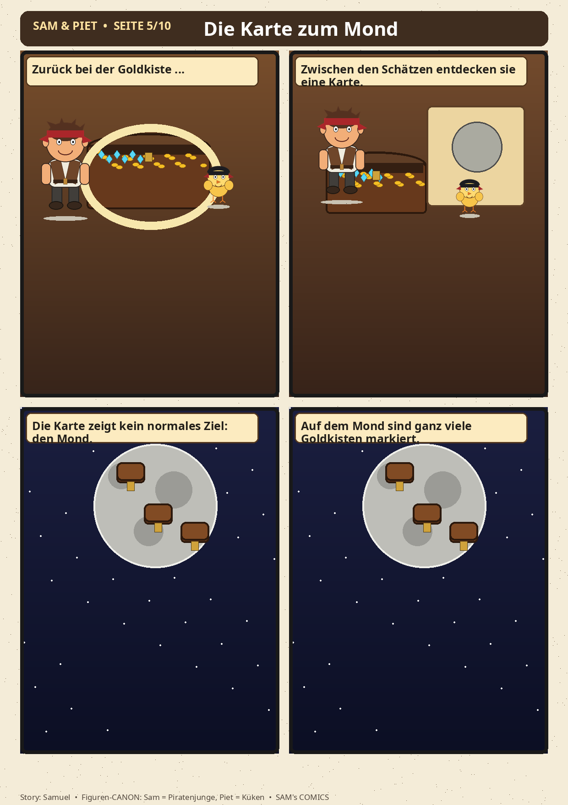
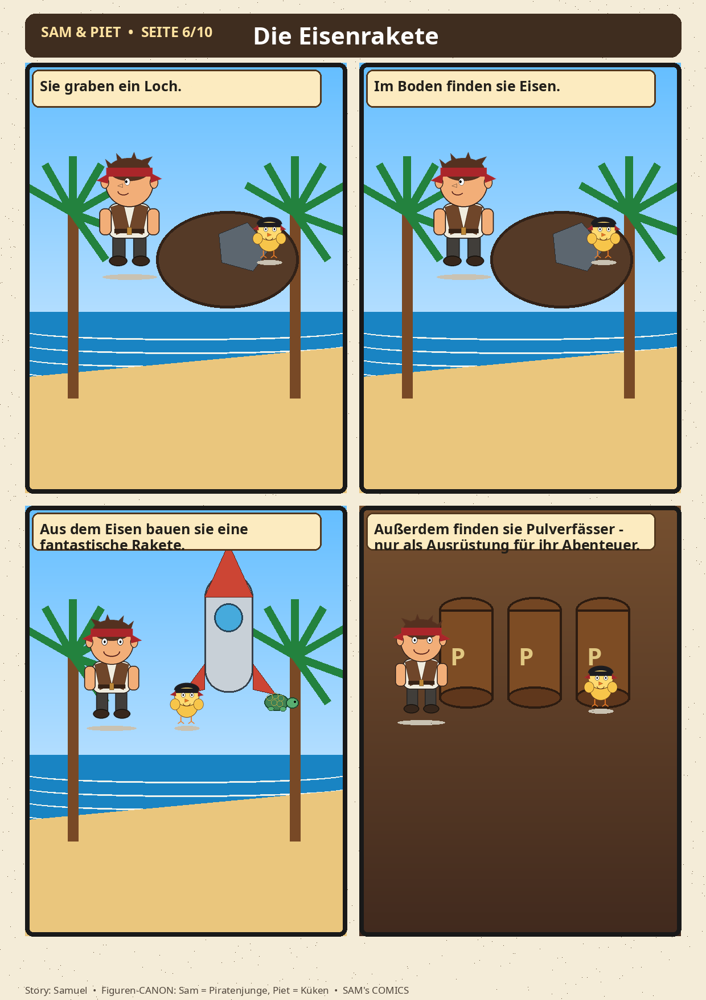
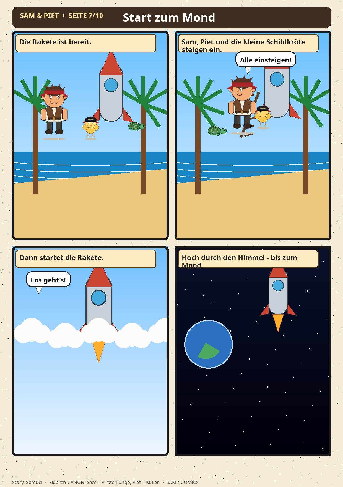
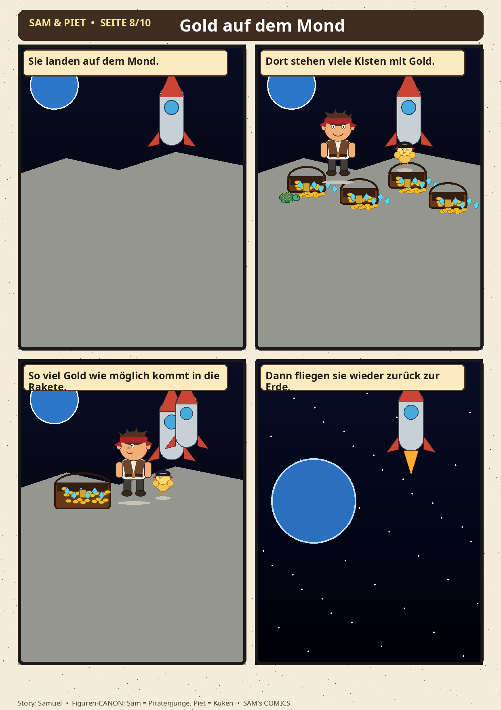
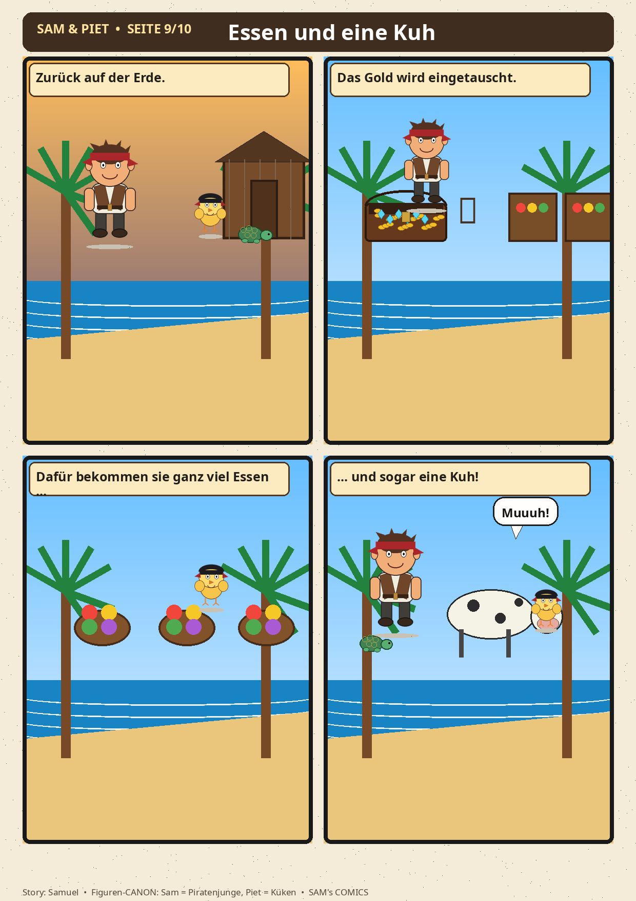
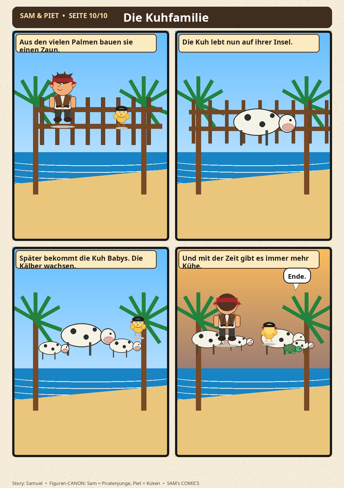

Sams frühe Comic-Entwürfe
Die Hütte, der Zombie und der Mondschatz
Erste Fassung
Eine Hütte, ein Zombie und eine Rakete aus Eisen. In der ersten Fassung erzählen kleine Figuren und vier Bilder pro Seite, wie Sam und Piet zum Mond kommen.
Die Zeichnungen und Sprechblasen sind im deutschen Original zu sehen. Tippe auf eine Seite, um das Bild in voller Größe zu öffnen.









